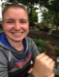

Chris Templeton
Assistant Professor of Biology
contact: Department of Biology
Pacific University
2043 College Way
Forest Grove, OR 97116
phone: 503-352-3149
email: templeton AT pacificu DOT edu

PhD Students
Esmeralda Quiros Guerrero
University of St Andrews
Song learning in duetting wrens

Undergraduate Students
Passina Abe, Pacific Biology 2018
鳥たちよ Hey all you birdies
匂い嗅ぎ合い Smelling all the smells around
メイト当て Recognize your mate

Lab Alumni: gone but not forgotten!

Megan Meatte, Pacific Biology 2020
Ali Osbrink, Pacific Biology 2019